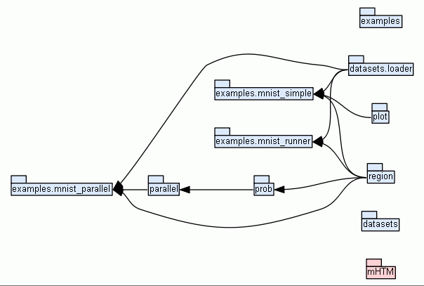

| Home | Trees | Indices | Help |
|
|---|
|
|
math HTM (mHTM) is a Python build of hierarchical temporal memory (HTM). This build specifically utilizes the cortical learning algorithms (CLA). A mathematical framework was developed for HTM. This library is built off that framework. The framework is currently only for the spatial pooler (SP); however, it is by no means limited to expand. This implementation was specifically designed to be a completely accurate representation of HTM. Additionally, care was taken to ensure that efficient computations are occurring.
We have recently submitted a paper to IEEE TNNLS explaining this work. A preprint is available on arXiv.
To aid in tying HTM into the machine learning community, this implementation was built to be compatible with Scikit-Learn. If you are familiar with Scikit-Learn, this API should feel natural. Additionally, because the Scikit-Learn interface is used, the SP in this implementation may be used in many of the pre-existing Scikit-Learn tools, namely those utilizing cross-validation (CV). A custom parameter generator was constructed, explicitly for that purpose.
The implementation of the SP is single-threaded; however, multiple forms of parallelizations for cross-validation and parameter optimization exist. For a local machine, simply using one of Scikit-Learn's CV functions supporting parallelization should suffice. For a cluster environment, code is provided to create and launch jobs.
This package is platform independent and should run on any system containing the prerequisites. If you are using a cluster, the cluster must be running SLURM, and as such must be a valid Linux distribution.
The API is fully documented and available in the "docs" folder. Simply open "index.html" in your favorite web browser.
As a starting point, examples have been prepared for working with MNIST. The dataset is additionally, included. Refer to "mnist_simple.py" in "src/examples" for a basic introduction into the API. In that same folder, refer to "mnist_parallel" for examples for using parallelizations locally or an cluster.
The "dev" folder contains the latest code regarding new experiments. This content is subject to change at any point and is not guaranteed to work; however, it can also be used as a basis for exploring this library.
For building the docs, Epydoc is used. To generate new docs,
While this code is completely free of charge, it is highly appreciated that all uses of this code are cited (both in publications as well as within any modified code). Once the IEEE TNNLS paper is approved please cite that work. For now, please cite the preprint:
J. Mnatzaganian, E. Fokoue, and D. Kudithipudi, "A Mathematical Formalization of Hierarchical Temporal Memory Cortical Learning Algorithm's Spatial Pooler," arXiv preprint arXiv:1601.06116, 2016.
No official support is provided; however, support may be provided. To ensure all feedback is within the same location, please use the Wiki for asking general questions and create issues if any bugs are found.
The original author of this code was James Mnatzaganian. For contact info, as well as other details, see his corresponding website.
This work was created at RIT's NanoComputing Research Laboratory.
This code is licensed under the MIT license, with one caveat. Numenta owns patents on specific items. While this code was written without using any of Numenta's code, it is possible that those patent laws still apply. Before using this code, commercially, it is recommended to seek legal advice.
The following image shows how everything is connected:
|  |
| Import Graph |
The following notes are for developers only.
From the mHTM folder, execute python epydoc --config=epydoc_config.txt mHTM
Author: James Mnatzaganian
Organization: NanoComputing Research Laboratory
Requires: Python 2.7.X
Version: 1.0.0
License: The MIT License
Copyright: © 2016 James Mnatzaganian
|
|||
| |||
| Examples | |||
|---|---|---|---|
| |||
| Datasets | |||
| |||
| Home | Trees | Indices | Help |
|
|---|
| Generated by Epydoc 3.0.1 on Sun Jan 24 21:03:12 2016 | http://epydoc.sourceforge.net |